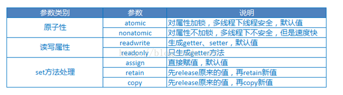

类
- @class 类前向声明
- isMemberOfClass 测试类中的直接成员关系
- isKindOfClass 检测继承层次的关系
- instancetype 表示返回的初始类型和它的初始化类型相同
property 属性
- atomic (默认)同一个时刻只有一个线程访问, 只能保证get和set的线程安全，无法保证对象的线程安全，性能比nonatomic慢20倍
- nonatomic 允许多线程同时访问
- assign(默认属性) 无需更改引用计数，基础数据类型使用
- retain 指针拷贝和引用计数加-
- copy 内容拷贝，不影响原有对象
- strong (ARC 默认属性), 相当于retain
- weak 相当于assign
- @dynamic 告诉编译器setter和getter方法由用户自己实现
- 基本数据类型：atomic, readwrite, assign; oc 对象: atomic readwrite, strong

分类和扩展
- 扩展是一种特殊的分类，扩展没有名字，扩展可以扩展属性，成员变量和方法
- 分类只能扩展方法
协议
- conformsToProtocol 检查对象是否遵循某一个协议